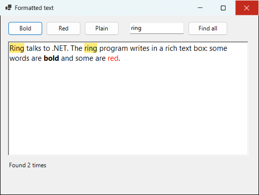

Formatted text
A rich text box shows text in bold, in colors and in different fonts, and saves it as an RTF file that word processors can open. This lesson formats the selected words, finds and marks every match of a word, and saves and loads the formatted text.
What you will learn#
- the selection:
SelectionStart,SelectionLength,SelectedTextandSelect, - formatting the selection:
SelectionFontandSelectionColor, Findand marking every match withSelectionBackColor,- the difference between
TextandRtf, SaveFileandLoadFilewith the formatRichText.
The tutorial A small text editor used a plain text box, where all the text has the same font. A RichTextBox keeps a format for each part of the text.
The program#
# formatted text - RichTextBox: bold and colored words, searching, saving as RTF and loading it again
load "dotnet.ring"
using {
"System"
"System.IO"
"System.Drawing"
"System.Windows.Forms"
}
# controls that the event code uses are global variables
oForm = ""
oRich = ""
oStatus = ""
oBold = ""
oFind = ""
func main
oForm = uiForm("Formatted text",520,360)
oBold = uiButton(oForm,"Bold",15,12,70,28,"toggleBold()")
uiButton(oForm,"Red",92,12,70,28,"makeRed()")
uiButton(oForm,"Plain",169,12,70,28,"makePlain()")
oFind = uiTextBox(oForm,260,14,110,24)
oFind.Text = "ring"
uiButton(oForm,"Find all",378,12,80,28,"findAll()")
# a RichTextBox is a text box whose text can have a font, a size, a color and more for each part
oRich = new RichTextBox()
oRich.Location = new Point(15,52)
oRich.Size = new Size(485,230)
oRich.Font = new Font("Segoe UI",11)
oRich.Text = "Ring talks to .NET. The ring program writes in a rich text box: some words are bold and some are red."
oForm.Controls.Add(oRich)
oStatus = uiLabel(oForm,"Select some text, then click a button",15,292,480,24)
uiRun(oForm)
# the font of the selection: uiFont(family, size, bold). The same family and size, only the bold changes.
func setBold lBold
oRich.SelectionFont = uiFont("Segoe UI",11,lBold)
func toggleBold
if oRich.SelectionLength = 0
oStatus.Text = "Select some text first"
return
but oRich.SelectionFont.Bold
setBold(False)
else
setBold(True)
ok
oStatus.Text = "Bold: " + oRich.SelectionFont.Bold
func makeRed
oRich.SelectionColor = uiColor("Red")
func makePlain
setBold(False)
oRich.SelectionColor = uiColor("Black")
# Find searches from a start place; the loop finds every match and marks it. The options "None" ignore upper and lower case; "MatchCase"
# would not.
func findAll
cWord = oFind.Text
nCount = 0
nStart = 0
while len(cWord) > 0
nPlace = oRich.Find([ :str = cWord, :start = nStart, :options = "None" ])
if nPlace < 0
exit
ok
oRich.Select([ :start = nPlace, :length = len(cWord) ])
oRich.SelectionBackColor = new Color().FromArgb([ :alpha = 255, :red = 255, :green = 235, :blue = 120 ])
nCount++
nStart = nPlace + len(cWord)
end
oRich.Select([ :start = 0, :length = 0 ])
oStatus.Text = "Found " + nCount + " times"
This program uses a generic function (dnStatic) where a class cannot be used. The lesson The generic functions explains them.
How it works#
The selection#
Formatting always applies to the selection. Select([ :start = 5, :length = 4 ]) selects four characters from the position 5 (positions count from 0), SelectedText is the text of the selection and SelectionLength its size. When nothing is selected the format applies to the text that is typed next. The function selectWord finds a word and selects it.
Font and color#
SelectionFont is a Font; it has the family, the size and the style (Bold, Italic...). A font object does not change: to make the selection bold the program makes a new font (uiFont("Segoe UI", 11, True)) and assigns it. SelectionColor and SelectionBackColor are colors. The same selection can be read back: SelectionFont.Bold says whether the selected text is bold, which is how the Bold button works as a toggle. When the selection has mixed formats SelectionFont is empty and SelectionColor is empty too; the program only reads them after selecting one word.
Find#
Find searches the text and returns the place of the match, or -1. With a start place (:start) and options it can search on from the last match: the loop of findAll selects each match, gives it a yellow background and starts the next search after it. The search ignores upper and lower case unless the option MatchCase is used.
Text and Rtf#
Text is the plain text without any format. Rtf is the same text with the format codes in the Rich Text Format: \b is bold, and the color table lists the colors. The test checks both: the formatting does not change the plain text, and the RTF has the codes. RTF is a text format, so the property can be saved in a file or sent in a message.
Saving and loading#
SaveFile([ :path = ..., :fileType = "RichText" ]) writes an RTF file; LoadFile reads it into another RichTextBox, and the bold word is still bold. Word processors open the file. Use the file type PlainText to write only the text.
RichTextBox is a Windows Forms control. WPF has its own RichTextBox with a different model (documents made of paragraphs and runs).
What you learned#
- the selection and its formatting,
- fonts as objects that are replaced, not changed,
- finding and marking text,
TextandRtf, and saving as RTF.
Exercises#
- Add buttons Italic and Underline with the font styles
ItalicandUnderline. - Add a
ColorDialog(new ColorDialog()) so that the user chooses the color. - Change
findAllto match the case, with a check box Match case. - Add a button that removes all the marks (
SelectionBackColorto white for the whole text, afterSelectAll()).